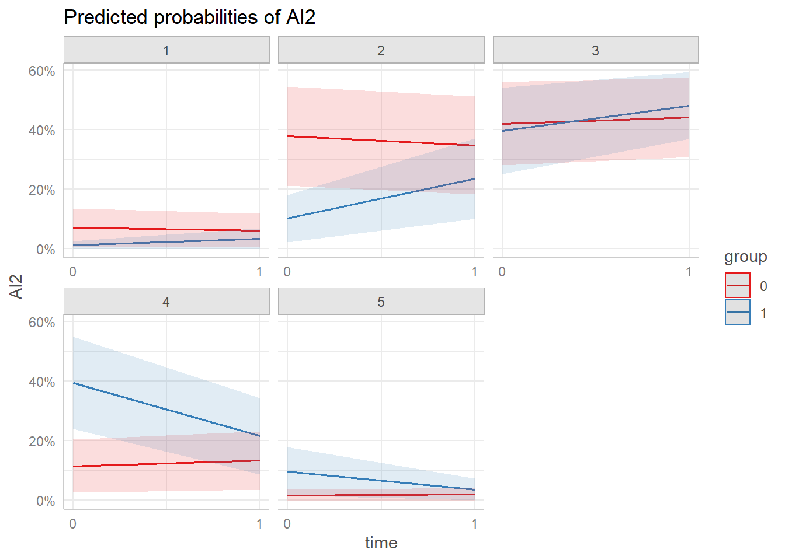

suppressPackageStartupMessages({
library(readxl)
library(gtsummary)
library(officer)
library(flextable)
library(ggeffects)
library(ggplot2)
library(dplyr)
library(ordinal)
library(texreg)
})
load("data/digital_distraction_data.RData")data$group <- as.factor(data$group)
demo_tbl <- data %>%
mutate(group = case_when(
group == "1" ~ "Treatment",
group == "0" ~ "Control"
)) %>%
rename(
grade = D1,
gender = D2,
non_academic = D3,
device = D4_multi,
most_distracted = D5,
distraction_source = D6,
teacher_authority = D7
) %>%
filter(time == "1") %>%
dplyr::select(group, period, grade, gender, non_academic, device, most_distracted, distraction_source, teacher_authority) %>%
tbl_summary(by = group,
percent = "column")
demo_tbl_ft <- as_flex_table(demo_tbl)demo_tbl_ft Characteristic | Control, N = 421 | Treatment, N = 441 |
|---|---|---|
period | ||
1st Period (7:50 -8:50 am) | 0 (0%) | 19 (43%) |
2nd Period (8:50 - 9:55 am) | 0 (0%) | 25 (57%) |
4th Period (11:25 - 12:30 pm) | 21 (50%) | 0 (0%) |
5th Period (12:55- 1:55 pm) | 21 (50%) | 0 (0%) |
grade | ||
10th | 11 (26%) | 10 (23%) |
11th | 4 (9.5%) | 5 (11%) |
12th | 1 (2.4%) | 0 (0%) |
8th | 14 (33%) | 9 (20%) |
9th | 12 (29%) | 20 (45%) |
gender | ||
Female | 24 (57%) | 27 (61%) |
Male | 18 (43%) | 16 (36%) |
Prefer not to say | 0 (0%) | 1 (2.3%) |
non_academic | ||
10-20 minutes | 16 (38%) | 16 (36%) |
20-30 minutes | 8 (19%) | 6 (14%) |
30-40 minutes | 4 (9.5%) | 0 (0%) |
Less than 10 minutes | 11 (26%) | 20 (45%) |
More than 40 minutes | 3 (7.1%) | 2 (4.5%) |
device | ||
Smartphone, | 1 (2.4%) | 0 (0%) |
Smartphone, Laptop (Model's) | 32 (76%) | 30 (68%) |
Smartphone, Laptop (Model's), AirPods | 0 (0%) | 2 (4.5%) |
Smartphone, Laptop (Model's), Game device (e.g., Nintendo) | 0 (0%) | 1 (2.3%) |
Smartphone, Laptop (Model's), Gaming, texting, Instagram | 0 (0%) | 1 (2.3%) |
Smartphone, Laptop (Model's), headphones | 0 (0%) | 1 (2.3%) |
Smartphone, Laptop (Model's), Tablet or iPad (personal) | 2 (4.8%) | 1 (2.3%) |
Smartphone, Smartwatch, Laptop (Model's) | 5 (12%) | 6 (14%) |
Smartphone, Smartwatch, Laptop (Model's), airpods | 0 (0%) | 1 (2.3%) |
Smartphone, Smartwatch, Laptop (Model's), AirPods | 1 (2.4%) | 0 (0%) |
Smartphone, Smartwatch, Laptop (Model's), Kindle | 1 (2.4%) | 0 (0%) |
Smartwatch, Laptop (Model's) | 0 (0%) | 1 (2.3%) |
most_distracted | ||
headphones | 0 (0%) | 1 (2.3%) |
Laptop (assigned by Model) | 4 (9.5%) | 4 (9.1%) |
Smartphone | 36 (86%) | 37 (84%) |
Smartwatch | 1 (2.4%) | 1 (2.3%) |
Tablet | 1 (2.4%) | 1 (2.3%) |
distraction_source | ||
all of the above | 0 (0%) | 1 (2.3%) |
1 (2.4%) | 0 (0%) | |
Family group chats | 1 (2.4%) | 0 (0%) |
listenign to music and texting | 1 (2.4%) | 0 (0%) |
Listening to music | 12 (29%) | 11 (25%) |
Listening to music or researching something else on my computer | 1 (2.4%) | 0 (0%) |
Looking for jobs | 1 (2.4%) | 0 (0%) |
Playing games | 7 (17%) | 6 (14%) |
reading | 0 (0%) | 1 (2.3%) |
texts | 0 (0%) | 1 (2.3%) |
Using social media | 12 (29%) | 19 (43%) |
Watching videos | 6 (14%) | 4 (9.1%) |
Watching videos or playing games during free time, or when I’m done with my work ie, Spanish math science | 0 (0%) | 1 (2.3%) |
teacher_authority | ||
Agree | 9 (21%) | 13 (30%) |
Disagree | 12 (29%) | 12 (27%) |
Neutral | 13 (31%) | 16 (36%) |
Strongly agree | 1 (2.4%) | 0 (0%) |
Strongly disagree | 7 (17%) | 3 (6.8%) |
1n (%) | ||
data <- data %>% mutate(across(AI1:ER4, as.factor))Attention Impulsiveness (AI)
AI1
main.AI1 <- clmm(AI1 ~ group + time + group:time +
(1 | student), data = data, Hess=TRUE, nAGQ=7)sum <- summary(main.AI1)
cf <- sum$coefficients %>% as.data.frame()
cf[1:4, 1] <- cf[1:4, 1]*-1
cf[1:4, 3] <- cf[1:4, 3]*-1
rownames(cf)[1:4] <- c("rating > 4", "rating > 3", "rating > 2", "rating > 1")
cf %>% mutate(odd_ratio = exp(Estimate)) %>%
mutate_if(is.numeric, ~ round(., 3)) Estimate Std. Error z value Pr(>|z|) odd_ratio
rating > 4 2.713 0.492 5.512 0.000 15.073
rating > 3 1.216 0.421 2.892 0.004 3.375
rating > 2 -0.557 0.413 -1.351 0.177 0.573
rating > 1 -2.804 0.507 -5.525 0.000 0.061
group1 0.875 0.548 1.597 0.110 2.398
time -0.250 0.416 -0.600 0.548 0.779
group1:time -0.791 0.583 -1.357 0.175 0.453ggpredict(main.AI1, terms = c("time", "group")) %>% plot() +
scale_x_continuous(breaks = c(0, 1)) AI2
main.AI2 <- clmm(AI2 ~ group + time + group:time +
(1 | student), data = data, Hess=TRUE, nAGQ=7)sum <- summary(main.AI2)
cf <- sum$coefficients %>% as.data.frame()
cf[1:4, 1] <- cf[1:4, 1]*-1
cf[1:4, 3] <- cf[1:4, 3]*-1
rownames(cf)[1:4] <- c("rating > 4", "rating > 3", "rating > 2", "rating > 1")
cf %>% mutate(odd_ratio = exp(Estimate)) %>%
mutate_if(is.numeric, ~ round(., 3)) Estimate Std. Error z value Pr(>|z|) odd_ratio
rating > 4 2.450 0.511 4.794 0.000 11.586
rating > 3 0.205 0.445 0.462 0.644 1.228
rating > 2 -1.879 0.493 -3.815 0.000 0.153
rating > 1 -4.108 0.613 -6.700 0.000 0.016
group1 2.049 0.623 3.288 0.001 7.763
time 0.199 0.424 0.469 0.639 1.220
group1:time -1.388 0.606 -2.292 0.022 0.250ggpredict(main.AI2, terms = c("time", "group")) %>% plot() +
scale_x_continuous(breaks = c(0, 1)) AI3
main.AI3 <- clmm(AI3 ~ group + time + group:time +
(1 | student), data = data, Hess=TRUE, nAGQ=7)sum <- summary(main.AI3)
cf <- sum$coefficients %>% as.data.frame()
cf[1:4, 1] <- cf[1:4, 1]*-1
cf[1:4, 3] <- cf[1:4, 3]*-1
rownames(cf)[1:4] <- c("rating > 4", "rating > 3", "rating > 2", "rating > 1")
cf %>% mutate(odd_ratio = exp(Estimate)) %>%
mutate_if(is.numeric, ~ round(., 3)) Estimate Std. Error z value Pr(>|z|) odd_ratio
rating > 4 1.050 0.494 2.126 0.034 2.859
rating > 3 -1.332 0.526 -2.535 0.011 0.264
rating > 2 -3.271 0.621 -5.269 0.000 0.038
rating > 1 -4.989 0.743 -6.718 0.000 0.007
group1 0.919 0.654 1.405 0.160 2.506
time -0.276 0.458 -0.602 0.547 0.759
group1:time 0.451 0.618 0.729 0.466 1.569ggpredict(main.AI3, terms = c("time", "group")) %>% plot() +
scale_x_continuous(breaks = c(0, 1)) 
AI4
main.AI4 <- clmm(AI4 ~ group + time + group:time +
(1 | student), data = data, Hess=TRUE, nAGQ=7)sum <- summary(main.AI4)
cf <- sum$coefficients %>% as.data.frame()
cf[1:4, 1] <- cf[1:4, 1]*-1
cf[1:4, 3] <- cf[1:4, 3]*-1
rownames(cf)[1:4] <- c("rating > 4", "rating > 3", "rating > 2", "rating > 1")
cf %>% mutate(odd_ratio = exp(Estimate)) %>%
mutate_if(is.numeric, ~ round(., 3)) Estimate Std. Error z value Pr(>|z|) odd_ratio
rating > 4 0.506 0.477 1.060 0.289 1.658
rating > 3 -1.042 0.491 -2.122 0.034 0.353
rating > 2 -2.315 0.546 -4.238 0.000 0.099
rating > 1 -4.826 0.807 -5.983 0.000 0.008
group1 -0.643 0.637 -1.009 0.313 0.526
time 0.270 0.459 0.588 0.557 1.310
group1:time 0.358 0.636 0.563 0.574 1.430ggpredict(main.AI4, terms = c("time", "group")) %>% plot() +
scale_x_continuous(breaks = c(0, 1)) AI5
main.AI5 <- clmm(AI5 ~ group + time + group:time +
(1 | student), data = data, Hess=TRUE, nAGQ=7)sum <- summary(main.AI5)
cf <- sum$coefficients %>% as.data.frame()
cf[1:4, 1] <- cf[1:4, 1]*-1
cf[1:4, 3] <- cf[1:4, 3]*-1
rownames(cf)[1:4] <- c("rating > 4", "rating > 3", "rating > 2", "rating > 1")
cf %>% mutate(odd_ratio = exp(Estimate)) %>%
mutate_if(is.numeric, ~ round(., 3)) Estimate Std. Error z value Pr(>|z|) odd_ratio
rating > 4 1.126 0.428 2.632 0.008 3.084
rating > 3 -0.889 0.434 -2.048 0.041 0.411
rating > 2 -2.817 0.519 -5.428 0.000 0.060
rating > 1 -4.562 0.659 -6.921 0.000 0.010
group1 0.903 0.557 1.621 0.105 2.467
time 0.577 0.443 1.304 0.192 1.782
group1:time -0.788 0.599 -1.316 0.188 0.455ggpredict(main.AI5, terms = c("time", "group")) %>% plot() +
scale_x_continuous(breaks = c(0, 1)) screenreg(list(main.AI1, main.AI2, main.AI3, main.AI4, main.AI5),
custom.model.names = c("AI 1", "AI 2", "AI 3", "AI 4", "AI 5"))
===============================================================================================
AI 1 AI 2 AI 3 AI 4 AI 5
-----------------------------------------------------------------------------------------------
group1 0.87 2.05 ** 0.92 -0.64 0.90
(0.55) (0.62) (0.65) (0.64) (0.56)
time -0.25 0.20 -0.28 0.27 0.58
(0.42) (0.42) (0.46) (0.46) (0.44)
group1:time -0.79 -1.39 * 0.45 0.36 -0.79
(0.58) (0.61) (0.62) (0.64) (0.60)
1|2 -2.71 *** -2.45 *** -1.05 * -0.51 -1.13 **
(0.49) (0.51) (0.49) (0.48) (0.43)
2|3 -1.22 ** -0.21 1.33 * 1.04 * 0.89 *
(0.42) (0.44) (0.53) (0.49) (0.43)
3|4 0.56 1.88 *** 3.27 *** 2.31 *** 2.82 ***
(0.41) (0.49) (0.62) (0.55) (0.52)
4|5 2.80 *** 4.11 *** 4.99 *** 4.83 *** 4.56 ***
(0.51) (0.61) (0.74) (0.81) (0.66)
-----------------------------------------------------------------------------------------------
Log Likelihood -253.90 -245.38 -233.75 -224.24 -242.39
AIC 523.81 506.76 483.50 464.47 500.78
BIC 548.99 531.94 508.68 489.65 525.96
Num. obs. 172 172 172 172 172
Groups (student) 85 85 85 85 85
Variance: student: (Intercept) 2.60 3.45 4.68 4.20 2.56
===============================================================================================
*** p < 0.001; ** p < 0.01; * p < 0.05Online Vigilance (OV)
OV1
main.OV1 <- clmm(OV1 ~ group + time + group:time +
(1 | student), data = data, Hess=TRUE, nAGQ=7)sum <- summary(main.OV1)
cf <- sum$coefficients %>% as.data.frame()
cf[1:4, 1] <- cf[1:4, 1]*-1
cf[1:4, 3] <- cf[1:4, 3]*-1
rownames(cf)[1:4] <- c("rating > 4", "rating > 3", "rating > 2", "rating > 1")
cf %>% mutate(odd_ratio = exp(Estimate)) %>%
mutate_if(is.numeric, ~ round(., 3)) Estimate Std. Error z value Pr(>|z|) odd_ratio
rating > 4 0.256 0.517 0.495 0.621 1.291
rating > 3 -1.285 0.548 -2.345 0.019 0.277
rating > 2 -2.838 0.617 -4.603 0.000 0.059
rating > 1 -4.760 0.755 -6.301 0.000 0.009
group1 0.864 0.682 1.268 0.205 2.373
time -0.192 0.479 -0.401 0.688 0.825
group1:time 0.407 0.639 0.638 0.524 1.503ggpredict(main.OV1, terms = c("time", "group")) %>% plot() +
scale_x_continuous(breaks = c(0, 1)) 
OV2
main.OV2 <- clmm(OV2 ~ group + time + group:time +
(1 | student), data = data, Hess=TRUE, nAGQ=7)sum <- summary(main.OV2 )
cf <- sum$coefficients %>% as.data.frame()
cf[1:4, 1] <- cf[1:4, 1]*-1
cf[1:4, 3] <- cf[1:4, 3]*-1
rownames(cf)[1:4] <- c("rating > 4", "rating > 3", "rating > 2", "rating > 1")
cf %>% mutate(odd_ratio = exp(Estimate)) %>%
mutate_if(is.numeric, ~ round(., 3)) Estimate Std. Error z value Pr(>|z|) odd_ratio
rating > 4 1.313 0.628 2.090 0.037 3.716
rating > 3 -0.714 0.632 -1.130 0.258 0.490
rating > 2 -3.164 0.715 -4.423 0.000 0.042
rating > 1 -6.062 0.929 -6.525 0.000 0.002
group1 0.600 0.811 0.739 0.460 1.822
time 0.171 0.473 0.361 0.718 1.186
group1:time 0.462 0.643 0.720 0.472 1.588ggpredict(main.OV2, terms = c("time", "group")) %>% plot() +
scale_x_continuous(breaks = c(0, 1)) 
OV3
main.OV3 <- clmm(OV3 ~ group + time + group:time +
(1 | student), data = data, Hess=TRUE, nAGQ=7)sum <- summary(main.OV3 )
cf <- sum$coefficients %>% as.data.frame()
cf[1:4, 1] <- cf[1:4, 1]*-1
cf[1:4, 3] <- cf[1:4, 3]*-1
rownames(cf)[1:4] <- c("rating > 4", "rating > 3", "rating > 2", "rating > 1")
cf %>% mutate(odd_ratio = exp(Estimate)) %>%
mutate_if(is.numeric, ~ round(., 3)) Estimate Std. Error z value Pr(>|z|) odd_ratio
rating > 4 -2.850 0.824 -3.459 0.001 0.058
rating > 3 -4.184 0.945 -4.428 0.000 0.015
rating > 2 -5.497 1.101 -4.991 0.000 0.004
rating > 1 -8.610 1.788 -4.817 0.000 0.000
group1 0.640 0.907 0.705 0.481 1.896
time -0.218 0.698 -0.313 0.754 0.804
group1:time 0.881 0.921 0.957 0.339 2.413ggpredict(main.OV3, terms = c("time", "group")) %>% plot() +
scale_x_continuous(breaks = c(0, 1)) 
screenreg(list(main.OV1, main.OV2, main.OV3),
custom.model.names = c("OV 1", "OV 2", "OV 3"))
=====================================================================
OV 1 OV 2 OV 3
---------------------------------------------------------------------
group1 0.86 0.60 0.64
(0.68) (0.81) (0.91)
time -0.19 0.17 -0.22
(0.48) (0.47) (0.70)
group1:time 0.41 0.46 0.88
(0.64) (0.64) (0.92)
1|2 -0.26 -1.31 * 2.85 ***
(0.52) (0.63) (0.82)
2|3 1.29 * 0.71 4.18 ***
(0.55) (0.63) (0.94)
3|4 2.84 *** 3.16 *** 5.50 ***
(0.62) (0.72) (1.10)
4|5 4.76 *** 6.06 *** 8.61 ***
(0.76) (0.93) (1.79)
---------------------------------------------------------------------
Log Likelihood -235.40 -230.51 -121.66
AIC 486.81 477.02 259.33
BIC 511.99 502.20 284.51
Num. obs. 172 172 172
Groups (student) 85 85 85
Variance: student: (Intercept) 5.18 9.42 6.08
=====================================================================
*** p < 0.001; ** p < 0.01; * p < 0.05Multitasking (MT)
MT1
main.MT1 <- clmm(MT1 ~ group + time + group:time +
(1 | student), data = data, Hess=TRUE, nAGQ=7)sum <- summary(main.MT1)
cf <- sum$coefficients %>% as.data.frame()
cf[1:4, 1] <- cf[1:4, 1]*-1
cf[1:4, 3] <- cf[1:4, 3]*-1
rownames(cf)[1:4] <- c("rating > 4", "rating > 3", "rating > 2", "rating > 1")
cf %>% mutate(odd_ratio = exp(Estimate)) %>%
mutate_if(is.numeric, ~ round(., 3)) Estimate Std. Error z value Pr(>|z|) odd_ratio
rating > 4 1.664 0.450 3.701 0.000 5.280
rating > 3 -0.131 0.424 -0.309 0.757 0.877
rating > 2 -1.689 0.463 -3.650 0.000 0.185
rating > 1 -3.765 0.615 -6.127 0.000 0.023
group1 0.599 0.561 1.067 0.286 1.820
time 0.230 0.424 0.541 0.588 1.258
group1:time -0.686 0.585 -1.173 0.241 0.504ggpredict(main.MT1, terms = c("time", "group")) %>% plot() +
scale_x_continuous(breaks = c(0, 1)) 
MT2
main.MT2 <- clmm(MT2 ~ group + time + group:time +
(1 | student), data = data, Hess=TRUE, nAGQ=7)sum <- summary(main.MT2)
cf <- sum$coefficients %>% as.data.frame()
cf[1:4, 1] <- cf[1:4, 1]*-1
cf[1:4, 3] <- cf[1:4, 3]*-1
rownames(cf)[1:4] <- c("rating > 4", "rating > 3", "rating > 2", "rating > 1")
cf %>% mutate(odd_ratio = exp(Estimate)) %>%
mutate_if(is.numeric, ~ round(., 3)) Estimate Std. Error z value Pr(>|z|) odd_ratio
rating > 4 4.474 0.737 6.070 0.000 87.705
rating > 3 2.843 0.643 4.422 0.000 17.163
rating > 2 0.327 0.567 0.578 0.564 1.387
rating > 1 -2.760 0.638 -4.324 0.000 0.063
group1 -0.647 0.731 -0.885 0.376 0.524
time -0.236 0.458 -0.514 0.607 0.790
group1:time 0.401 0.626 0.640 0.522 1.493ggpredict(main.MT2, terms = c("time", "group")) %>% plot() +
scale_x_continuous(breaks = c(0, 1)) 
MT3
main.MT3 <- clmm(MT3 ~ group + time + group:time +
(1 | student), data = data, Hess=TRUE, nAGQ=7)sum <- summary(main.MT3)
cf <- sum$coefficients %>% as.data.frame()
cf[1:4, 1] <- cf[1:4, 1]*-1
cf[1:4, 3] <- cf[1:4, 3]*-1
rownames(cf)[1:4] <- c("rating > 4", "rating > 3", "rating > 2", "rating > 1")
cf %>% mutate(odd_ratio = exp(Estimate)) %>%
mutate_if(is.numeric, ~ round(., 3)) Estimate Std. Error z value Pr(>|z|) odd_ratio
rating > 4 1.340 0.454 2.949 0.003 3.818
rating > 3 -0.075 0.441 -0.169 0.866 0.928
rating > 2 -1.627 0.478 -3.402 0.001 0.197
rating > 1 -3.540 0.585 -6.054 0.000 0.029
group1 0.398 0.582 0.684 0.494 1.489
time 0.727 0.428 1.699 0.089 2.068
group1:time -0.593 0.590 -1.005 0.315 0.553ggpredict(main.MT3, terms = c("time", "group")) %>% plot() +
scale_x_continuous(breaks = c(0, 1)) 
MT4
main.MT4 <- clmm(MT4 ~ group + time + group:time +
(1 | student), data = data, Hess=TRUE, nAGQ=7)sum <- summary(main.MT4)
cf <- sum$coefficients %>% as.data.frame()
cf[1:4, 1] <- cf[1:4, 1]*-1
cf[1:4, 3] <- cf[1:4, 3]*-1
rownames(cf)[1:4] <- c("rating > 4", "rating > 3", "rating > 2", "rating > 1")
cf %>% mutate(odd_ratio = exp(Estimate)) %>%
mutate_if(is.numeric, ~ round(., 3)) Estimate Std. Error z value Pr(>|z|) odd_ratio
rating > 4 2.739 0.466 5.872 0.000 15.471
rating > 3 0.964 0.383 2.516 0.012 2.621
rating > 2 -0.798 0.377 -2.117 0.034 0.450
rating > 1 -2.464 0.451 -5.462 0.000 0.085
group1 -0.409 0.479 -0.853 0.394 0.665
time 0.018 0.421 0.043 0.966 1.018
group1:time 0.517 0.568 0.910 0.363 1.677ggpredict(main.MT4, terms = c("time", "group")) %>% plot() +
scale_x_continuous(breaks = c(0, 1)) 
screenreg(list(main.MT1, main.MT2, main.MT3, main.MT4),
custom.model.names = c("MT 1", "MT 2", "MT 3", "MT 4"))
==================================================================================
MT 1 MT 2 MT 3 MT 4
----------------------------------------------------------------------------------
group1 0.60 -0.65 0.40 -0.41
(0.56) (0.73) (0.58) (0.48)
time 0.23 -0.24 0.73 0.02
(0.42) (0.46) (0.43) (0.42)
group1:time -0.69 0.40 -0.59 0.52
(0.58) (0.63) (0.59) (0.57)
1|2 -1.66 *** -4.47 *** -1.34 ** -2.74 ***
(0.45) (0.74) (0.45) (0.47)
2|3 0.13 -2.84 *** 0.07 -0.96 *
(0.42) (0.64) (0.44) (0.38)
3|4 1.69 *** -0.33 1.63 *** 0.80 *
(0.46) (0.57) (0.48) (0.38)
4|5 3.77 *** 2.76 *** 3.54 *** 2.46 ***
(0.61) (0.64) (0.58) (0.45)
----------------------------------------------------------------------------------
Log Likelihood -256.18 -235.88 -259.25 -256.10
AIC 528.35 487.76 534.50 528.20
BIC 553.53 512.94 559.68 553.38
Num. obs. 172 172 172 172
Groups (student) 85 85 85 85
Variance: student: (Intercept) 3.00 7.63 3.38 1.24
==================================================================================
*** p < 0.001; ** p < 0.01; * p < 0.05Emotion Regulation (ER)
ER1
main.ER1 <- clmm(ER1 ~ group + time + group:time +
(1 | student), data = data, Hess=TRUE, nAGQ=7)sum <- summary(main.ER1)
cf <- sum$coefficients %>% as.data.frame()
cf[1:4, 1] <- cf[1:4, 1]*-1
cf[1:4, 3] <- cf[1:4, 3]*-1
rownames(cf)[1:4] <- c("rating > 4", "rating > 3", "rating > 2", "rating > 1")
cf %>% mutate(odd_ratio = exp(Estimate)) %>%
mutate_if(is.numeric, ~ round(., 3)) Estimate Std. Error z value Pr(>|z|) odd_ratio
rating > 4 2.426 0.454 5.347 0.000 11.311
rating > 3 1.415 0.408 3.469 0.001 4.118
rating > 2 -0.008 0.379 -0.020 0.984 0.992
rating > 1 -1.754 0.423 -4.143 0.000 0.173
group1 -0.265 0.500 -0.530 0.596 0.767
time 0.029 0.422 0.068 0.946 1.029
group1:time -0.229 0.576 -0.398 0.691 0.795ggpredict(main.ER1, terms = c("time", "group")) %>% plot() +
scale_x_continuous(breaks = c(0, 1)) 
ER2
main.ER2 <- clmm(ER2 ~ group + time + group:time +
(1 | student), data = data, Hess=TRUE, nAGQ=7)sum <- summary(main.ER2)
cf <- sum$coefficients %>% as.data.frame()
cf[1:4, 1] <- cf[1:4, 1]*-1
cf[1:4, 3] <- cf[1:4, 3]*-1
rownames(cf)[1:4] <- c("rating > 4", "rating > 3", "rating > 2", "rating > 1")
cf %>% mutate(odd_ratio = exp(Estimate)) %>%
mutate_if(is.numeric, ~ round(., 3)) Estimate Std. Error z value Pr(>|z|) odd_ratio
rating > 4 2.073 0.525 3.952 0.000 7.949
rating > 3 0.861 0.487 1.767 0.077 2.365
rating > 2 -0.607 0.483 -1.256 0.209 0.545
rating > 1 -2.410 0.537 -4.484 0.000 0.090
group1 0.169 0.623 0.272 0.786 1.185
time -0.111 0.442 -0.250 0.803 0.895
group1:time -0.121 0.604 -0.200 0.841 0.886ggpredict(main.ER2, terms = c("time", "group")) %>% plot() +
scale_x_continuous(breaks = c(0, 1)) 
ER3
main.ER3 <- clmm(ER3 ~ group + time + group:time +
(1 | student), data = data, Hess=TRUE, nAGQ=7)sum <- summary(main.ER3)
cf <- sum$coefficients %>% as.data.frame()
cf[1:4, 1] <- cf[1:4, 1]*-1
cf[1:4, 3] <- cf[1:4, 3]*-1
rownames(cf)[1:4] <- c("rating > 4", "rating > 3", "rating > 2", "rating > 1")
cf %>% mutate(odd_ratio = exp(Estimate)) %>%
mutate_if(is.numeric, ~ round(., 3)) Estimate Std. Error z value Pr(>|z|) odd_ratio
rating > 4 2.976 0.543 5.481 0.000 19.614
rating > 3 1.572 0.492 3.192 0.001 4.817
rating > 2 -0.002 0.470 -0.003 0.997 0.998
rating > 1 -2.531 0.544 -4.649 0.000 0.080
group1 -0.292 0.602 -0.485 0.627 0.747
time -0.320 0.434 -0.738 0.461 0.726
group1:time 0.518 0.593 0.874 0.382 1.679ggpredict(main.ER3, terms = c("time", "group")) %>% plot() +
scale_x_continuous(breaks = c(0, 1)) 
ER4
main.ER4 <- clmm(ER4 ~ group + time + group:time +
(1 | student), data = data, Hess=TRUE, nAGQ=7)sum <- summary(main.ER4)
cf <- sum$coefficients %>% as.data.frame()
cf[1:4, 1] <- cf[1:4, 1]*-1
cf[1:4, 3] <- cf[1:4, 3]*-1
rownames(cf)[1:4] <- c("rating > 4", "rating > 3", "rating > 2", "rating > 1")
cf %>% mutate(odd_ratio = exp(Estimate)) %>%
mutate_if(is.numeric, ~ round(., 3)) Estimate Std. Error z value Pr(>|z|) odd_ratio
rating > 4 1.536 0.514 2.988 0.003 4.647
rating > 3 0.348 0.485 0.717 0.473 1.416
rating > 2 -1.293 0.497 -2.601 0.009 0.274
rating > 1 -3.319 0.580 -5.719 0.000 0.036
group1 1.388 0.644 2.156 0.031 4.007
time 1.067 0.447 2.389 0.017 2.907
group1:time -0.944 0.608 -1.552 0.121 0.389ggpredict(main.ER4, terms = c("time", "group")) %>% plot() +
scale_x_continuous(breaks = c(0, 1)) screenreg(list(main.ER1, main.ER2, main.ER3, main.ER4),
custom.model.names = c("ER 1", "ER 2", "ER 3", "ER 4"))
==================================================================================
ER 1 ER 2 ER 3 ER 4
----------------------------------------------------------------------------------
group1 -0.26 0.17 -0.29 1.39 *
(0.50) (0.62) (0.60) (0.64)
time 0.03 -0.11 -0.32 1.07 *
(0.42) (0.44) (0.43) (0.45)
group1:time -0.23 -0.12 0.52 -0.94
(0.58) (0.60) (0.59) (0.61)
1|2 -2.43 *** -2.07 *** -2.98 *** -1.54 **
(0.45) (0.52) (0.54) (0.51)
2|3 -1.42 *** -0.86 -1.57 ** -0.35
(0.41) (0.49) (0.49) (0.49)
3|4 0.01 0.61 0.00 1.29 **
(0.38) (0.48) (0.47) (0.50)
4|5 1.75 *** 2.41 *** 2.53 *** 3.32 ***
(0.42) (0.54) (0.54) (0.58)
----------------------------------------------------------------------------------
Log Likelihood -264.21 -259.98 -255.50 -252.73
AIC 544.42 535.96 526.99 521.45
BIC 569.60 561.14 552.17 546.63
Num. obs. 172 172 172 172
Groups (student) 85 85 85 85
Variance: student: (Intercept) 1.90 4.63 4.07 4.69
==================================================================================
*** p < 0.001; ** p < 0.01; * p < 0.05